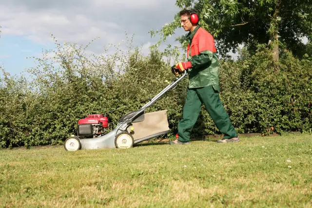
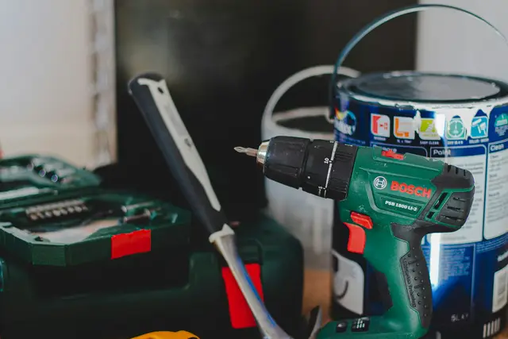
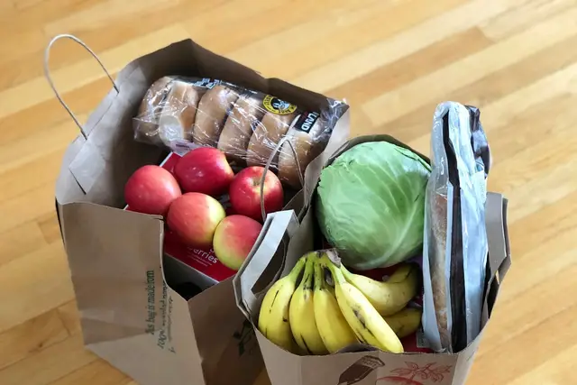
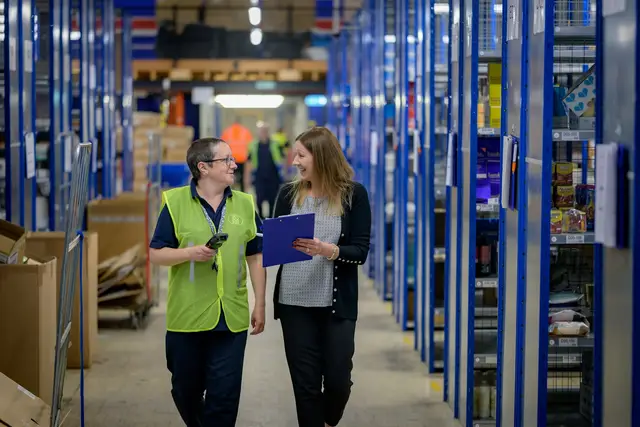

Particuliers
Ménage et repassage à domicile
Ménage courant, grand nettoyage, vitres, repassage.
50 % de crédit d’impôt*
Association intermédiaire · Monein, depuis 1988
Ménage, jardin, bricolage, garde d’enfants, renfort en entreprise : nous vous envoyons des intervenants du Béarn, à Monein et dans un rayon de 40 km. Chaque heure que vous nous confiez aide une personne à retrouver le chemin de l’emploi.
Ou appelez-nous : 05 59 21 45 20
Ménage, jardin, bricolage, enfants, courses : avec 50 % de crédit d’impôt.
Nos services à domicile Entreprises & collectivités Un renfort, sans recrutement.Remplacements, surcroîts d’activité : nous gérons contrat et paie.
Mise à disposition Vous cherchez un emploi Retravaillez près de chez vous.Des missions rémunérées et un accompagnement pour aller plus loin.
Nous rejoindreNos services
Ménage courant, grand nettoyage, vitres, repassage.
50 % de crédit d’impôt*

Tonte, haies, désherbage, feuilles mortes.
50 % de crédit d’impôt*

Montage de meubles, fixations, petites réparations.
50 % de crédit d’impôt*
Sortie d’école, garde des 3 ans et plus, devoirs.
50 % de crédit d’impôt*

Courses, livraison, rangement et petites commissions.
50 % de crédit d’impôt*
Nourrir, promener, arroser, relever le courrier.
50 % de crédit d’impôt*
Mise en place, service, plonge et rangement.
Devis gratuit

Remplacements, surcroîts d’activité, missions ponctuelles.
Sans gestion administrative
* Sur les services à la personne éligibles, dans les conditions et plafonds fixés par la loi.
Le double effet
Chez nous, chaque heure de service est aussi une heure de travail payée à une personne qui reprend pied dans l’emploi.
Deux heures de ménage, le mardi matin.
Deux heures de salaire et un pas vers un emploi durable.
Comment ça marche
L’association est l’employeur. Vous n’avez rien à déclarer : vous recevez une facture, puis votre attestation fiscale.
Par téléphone, en agence ou via le formulaire. Vous nous dites ce dont vous avez besoin.
Devis gratuit, choix de l’intervenant, rencontre si vous le souhaitez. L’association s’occupe du contrat et de la paie.
Vous recevez une facture après chaque période et, chaque année, une attestation fiscale.
Zone d’intervention
Trois agences, à Monein, Mourenx et Orthez, et des permanences à Artix, Salies-de-Béarn et Arzacq : nous restons à deux pas de chez vous.
Voir nos agences et horairesVotre commune n’apparaît pas ? Appelez-nous au 05 59 21 45 20.
Questions fréquentes
Une autre question ? Écrivez-nous ou appelez le 05 59 21 45 20.
C’est une structure de l’insertion par l’activité économique, conventionnée par l’État. Elle embauche des personnes sans emploi et les met à disposition de particuliers, d’entreprises ou de collectivités, tout en les accompagnant vers un emploi durable.
Pour les services à la personne éligibles (ménage, jardinage, petit bricolage, garde d’enfants…), la moitié des sommes versées vous est remboursée par l’administration fiscale, que vous soyez imposable ou non. Nous vous envoyons chaque année l’attestation à joindre à votre déclaration.
Non. Vous pouvez faire appel à nous une seule fois ou régulièrement, et arrêter quand vous le souhaitez.
Des habitants du secteur, salariés de l’association, que nous connaissons et accompagnons. Nous choisissons pour chaque demande la personne la plus adaptée.
Un appel suffit : nous vous rappelons, faisons le point et vous envoyons un devis gratuit, sans engagement.